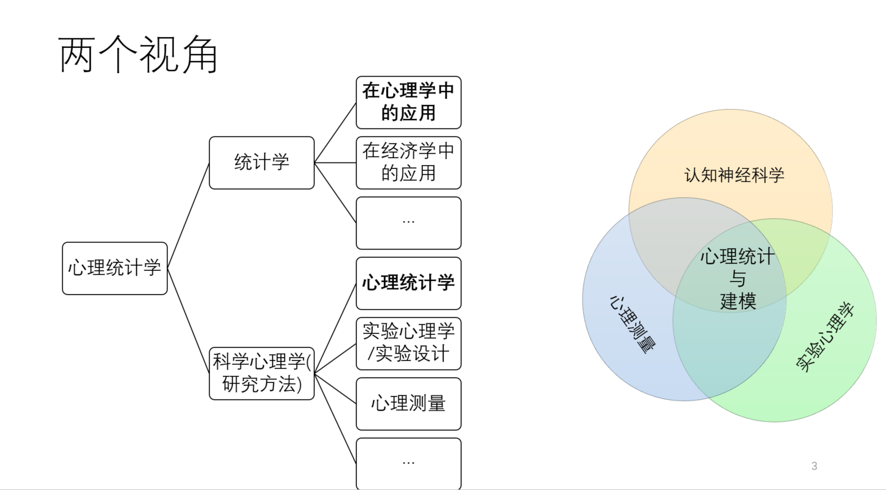

期末复习
Hu Chuan-Peng
2023-06-21
| 序号 | 春季学期内容 |
|---|---|
| 1 | 统计学的历史与意义 |
| 2 | 概率 |
| 3 | 数据与数据可视化 |
| 4 | 集中量数和离散量数 |
| 5 | 离散变量概率分布 |
| 6 | 正态分布 |
| 7 | 标准分数 |
| 8 | 参数估计1 |
| 9 | 参数估计2 |
| 10 | 假设检验（Fish） |
| 11 | P值 |
| 12 | 两类错误 |
| 13 | 相关和相关显著性 |
| 14 | z检验和t检验 |

概述
统计学在心理学中的应用
心理统计概率
研究中的统计
概率
随机现象和随机事件
概率的性质
概率的运算
加减乘除
条件概率
模型
数据
四种数据类型
称名变量
顺序变量
等距变量
等比变量
集中量数和离散量数
集中量数的定义
集中量数的类型及特性
平均数
中位数
众数
离散量数的类型及特性
全距
四分位距
方差
标准差
地位量数的类型及特性
百分位数
百分等级
离散变量的概率分布
伯努利试验
离散随机变量
二项分布
二项分布的定义
二项分布的计算
连续变量概率分布
离散变量的概率质量函数
连续变量的概率密度函数
正态分布及特性
中心极限定理
连续变量标准化：z分数
z分数的性质
参数估计
抽样分布与标准误
参数估计的两种方法：点估计和区间估计
区间估计的原理与置信区间
抽样分布的两种类型
正态分布
t分布
假设检验
假设检验原理
零假设
备择假设
小概率事件
显著性水平
假设检验基本步骤
p 值的理解
p 值的误用
假设检验结果解读
两类错误的定义
一类错误
二类错误
两类错误的真实概率
相关分析
皮尔逊积差相关的原理与适用条件
皮尔逊积差相关的性质
相关与变异
皮尔逊积差相关的适用条件
不同数据类型对应不同的相关系数
斯皮尔曼等级相关
肯德尔W系数
肯德尔U系数
z检验&t检验
总体方差已知时使用z分布
总体方差未知时使用t分布
配对样本使用配对样本t检验
独立样本使用独立样本t检验
假设检验中的效应量与常见的指标
01 - 统计学的历史与意义
outline
统计学在心理学中的应用
心理统计概率
研究中的统计
统计学在心理学中的应用
心理统计概论

研究中的统计(Statistics)

研究的基本流程

02 - 概率
outline
随机现象和随机事件
概率的性质
概率的运算
加减乘除
条件概率
模型
概率
随机现象
样本空间
随机事件(基本事件/复合事件)
频率
概率
概率的性质
\(p(\Omega) = 1\)
\(0 \le p(A) \le 1\)
\(p(A+B) = p(A)+p(B)-p(A \cap B)\)
独立事件
互不相容事件
概率的加法
概率的乘法
- 条件概率
\[p(A | B) = {p(A \cap B)}/{p(B)}\]
- 贝叶斯公式
\[p(A|B) = \frac{p(B|A)p(A)}{p(B)}\]
模型

不同的模型可以用来解释相同的现象
模型生成过程（Generative process）

模型逆向推理过程（Inverse inference process）

03 - 数据
outline
四种数据类型
称名变量
顺序变量
等距变量
等比变量
数据
| 称名 | 顺序 | 等距 | 等比 | |
|---|---|---|---|---|
| 不相等单位 | \(\surd\) | \(\surd\) | ||
| 相等单位 | \(\surd\) | \(\surd\) | ||
| 相对零点 | \(\surd\) | \(\surd\) | \(\surd\) | |
| 绝对零点 | \(\surd\) | |||
| 称名 | 顺序 | 等距 | 等比 | |
|---|---|---|---|---|
| 分类或标签变量 | \(\surd\) | \(\surd\) | \(\surd\) | \(\surd\) |
| 按顺序排列 | \(\surd\) | \(\surd\) | \(\surd\) | |
| 等距 | \(\surd\) | \(\surd\) | ||
| 有意义的零点 | \(\surd\) | |||
04 - 集中量数和离散量数
outline
集中量数的定义
集中量数的类型及特性
平均数
中位数
众数
离散量数的类型及特性
全距
四分位距
方差
标准差
地位量数的类型及特性
百分位数
百分等级
集中量数
集中量数是用来描述一组数据分布集中趋势的指标；
常见的集中量数有平均数、中位数、众数；
集中量数并不提供关于个体值的信息；
集中量数提供整个数据集的全面总结。
期望值和平均值
- 期望值(Expectation)
- 一个随机变量或其任何给定函数的所有可能值的总和或积分，乘以该变量值的各自概率，一般用于表示总体。
- \(E(X) = \int xp(x)dx\)
- 平均值(Mean)
- 所有数据之和再除以数据总数，一般用于表示个体。
- \(\bar{X} = \frac{\sum x_i}{n}\)
不同类型的平均数
算术平均数(Arithmetic mean)
算术平均数是指在一组数据中所有数据之和再除以数据的个数。它是统计学中最基本、最常用的一种平均指标，分为简单算术平均数、加权算术平均数。
\(\bar{X} = \frac{\sum x_i}{n}\)(简单)
\(\bar{X} = \frac{\sum x_i*f_i}{\sum fi}，f代表权重\)(加权)
几何平均数(Geometric mean)
n个变量值连乘积的n次方根，通常用于计算平均利率或发展速度。
\(\sqrt[N](X_1,X_2,X_3......X_N)\)
算术平均数的特性
\(\sum X = \bar{X}*n\)
\(\sum (X-\bar{X}) = 0\)
\(\frac{\sum (x \pm C)}{n} = \bar{X}\pm C\)
\(\frac{\sum(x * C)}{n} = \bar{X} * C\)
算术平均数的优缺点
对数据的变化很敏感;
确定性和唯一性;
适用于进一步的代数计算;
受抽样变化的影响较小
容易受到极端值的影响
中位数(Median)
中位数指的是一组数据按大小顺序排列后，处于中间位置的数。
如果数据集有奇数个数，那么中位数就是这些数中间那个数；如果数据集有偶数个数，中位数就是中间两个数的平均数。
中位数的优缺点
对数据变化的敏感度比平均值低
不适合进一步的代数计算
适用于顺序变量
众数(Mode)
众数是指在一组数据中出现次数最多的数值，也可以说是数据集中的最常见的数值。
假设以下是某个班级学生的考试成绩：85, 90, 75, 85, 92, 85, 89, 90, 92, 85, 其中，85出现的次数最多，因此85是这组数据的众数。
众数的优缺点
不能进一步进行代数运算
对中心趋势能够快速而准确地估计
平均数、中位数、众数之间的关系
在正态分布中, 平均值、中位数、众数都是同一个值
差异量数
- 数据绕平均值变化的程度
全距(range)
描述一组数据的离散程度的一项指标，它是数据中最大值和最小值之间的差值。全距可以帮助了解数据的变化范围和数据分布的广泛程度。
range = 最大值 - 最小值
全距的优缺点
描绘出分布的全貌
容易受到极端值的影响
四分位距(Interquartile range, IQR)
\(IQR = 𝑄_3−𝑄_1\)
IQR : interquartile range
\(𝑄_3\) : 3rd quartile or 75th percentile
\(𝑄_1\) : 1st quartile or 25th percentile
方差(variance)
方差衡量的是与平均值的差异性。
方差的单位（单位平方）与原始值不同
标准差(Standard Deviation)
标准差是方差的平方根
标准差的单位与原始数据相同
标准差(Standard Deviation)
sum square, \(SS =\sum (x - \mu)^2\)
mean square, \(MS = SS/N\)
variance, \(\sigma^2 = \frac{\sum(X-\mu)^2}{N}\)
standard deviation, \[\sigma =\sqrt(\frac{(x-\mu)^2}{N}) \]
相对地位量数
百分位数
百分位数（percentile）是统计学中常用的概念，表示在一个数据集中，某个特定百分比的数据位于该数据集的哪个位置。
计算百分位数的方法是：首先将数据集按照大小进行排序，然后确定要计算的百分位数p（例如，p=75表示计算第75个百分位数），然后找到排名为np/100的数据，如果np/100不是整数，则将其向上取整，并将其作为第np个百分位数的位置，即第np个百分位数为该位置对应的数据值。
百分位数的计算
\[P_p= L_p + (P/100 × N−F_b)/f_p ×i\]
\[ L_p：百分位数所在组的精确下限\]
\[F_b：小于L_p的累计次数\]
\[ f_p：百分位数所在组的次数\]
\[i: 组距\]
\[N : 总次数\]
百分位数的计算
\[P_p= U_p - ((1− P/100) × N−F_a)/f_p × i\]
\[U_p ：百分位数所在组的精确上限\] \[F_a ：大于U_p的累计次数\] \[f_p：百分位数所在组的次数\]
\[i : 组距\]
\[𝑁 : 总次数\]
百分等级
- 百分等级（percentile rank）是一个数值在其所在数据集合中的位置百分比。例如，如果某个数值的百分等级为80%，则说明在与该数值相同大小的数据集合中，该数值排名位于前20%。
计算百分等级的方法是：首先将数据集按照大小进行排序，然后找到该数值在数据集中的位置，即排名为n，然后计算该数值的百分等级为n/N，其中N是数据集的大小。
百分等级的计算
\[PR= (F_b + (X − L_p)/i ×f_p)/N\]
\[L_p：百分位数所在组的精确下限\]
\[F_b：小于L_p的累计次数\]
\[L_p：百分位数所在组的次数\]
\[i : 组距\]
\[N : 总次数\]
百分等级的计算
\[PR= [1−(F_a + (U_P − X)/i ×f_p)/N]×100\]
\[U_p ：百分位数所在组的精确上限\] \[F_a ：大于U_p的累计次数\] \[f_p：百分位数所在组的次数\] \[i : 组距\] \[N : 总次数\]
05 - 离散变量的概率分布
outline
伯努利试验
离散随机变量
二项分布
二项分布的定义
二项分布的计算
伯努利试验
- 同样的条件下重复地、相互独立地进行的一种随机试验。
- 该随机试验只有两种可能结果：发生或者不发生。
- 我们假设该项试验独立重复地进行了n次，那么就称这一系列重复独立的随机试验为n重伯努利试验(n-fold bernoulli trials)。
满足条件：
- 事先规定了试验次数n
- 各次试验相互独立，其结果相互独立
- 每次试验只有两种结果，记为𝐴与\(\bar{A}\)
- 每次试验条件相同，所以P(𝐴)=p, \(P( \bar{A})=q\)
伯努利试验：
- 事件的结果的取值是离散的，{0，1}
- 事件 A 出现概率为\(p\), 事件 A 不出现概率为\(q = 1 - p\)。
- n次试验中，事件A出现 \(k (k < n)\)次的可能性是有规律的
离散随机变量：
- 其可能的取值是间断的，有时只有有限的几个变量值结果{0，1}
- e.g. 两点分布：一次试验，事件 A 出现概率为\(p\) ,事件 A 不出现概率为\(q = 1 - p\), 以 X 记一次试验中 A 出现的次数，X 的取值为 0,1 两个值。
- e.g. 两点分布：一次试验，事件 A 出现概率为\(p\) ,事件 A 不出现概率为\(q = 1 - p\), 以 X 记一次试验中 A 出现的次数，X 的取值为 0,1 两个值。
- 离散变量X的可能取值为\(x_1 ,x_2, x_3,…, x_𝑖\)，这种取值（可一一列出）离散间断的变量称为离散随机变量
- e.g. 伯努利试验：一次伯努利试验中，抛10次硬币，记”正面朝上”为事件A，以X记一次试验中A出现的次数，X的可能取值为0,1,2,3,4…,10。
- 离散型随机变量𝑋的概率函数或概率分布\(P ( 𝑋 = x_i ) = p_i (i =1 , 2,…,n)\)
二项分布(Binomial Distribution)
- n次独立重复的伯努利试验的概率分布服从二项分布
- 每次试验中事件A发生的概率为p
- X表示n重伯努利试验中事件A发生的次数，则X的可能取值为0，1，…，n,
- 对每一个k\((0 \le k \le n)\),事件{X = k}即为”n次试验中事件A恰好发生k次”，随机变量X的离散概率分布即为二项分布。
二项分布(Binomial Distribution)
- 一般来说，如果随机变量 X 遵循参数 \(n \in N\) 和 \(p \in [0,1]\), 写作 \(X \sim B(n, p)\).
- X \(\sim\) binomial(n, p)
- （随机变量X服从以n, p为参数的二项分布）
二项分布(Binomial Distribution)
在n个独立的伯努利试验中获得k次成功的概率由概率函数给出:
\[P(X=k)=C_n^k p^k q^{n−k}= C_n^k p^k (1−p)^{n−k}\]
\[C_n^k= n!/k!(n−k)! \]
\[b(k; n,p)=( _k^n)p^k q^{n−k}\]
二项分布(Binomial Distribution)
\(X \sim binomial(n, p)\)
（随机变量X服从以n, p为参数的二项分布）
\(P (X=k )=𝐶_n^k p^k q^{n−k}= C_n^k p^k (1−p)^{n−k} , C_n^k= n!/k!(n−k)!\)
已知一次试验中的每次尝试中事件A
发生的概率p，共进行n次独立重复的伯努利试验
事件A在一次试验中出现k次，事件A在n次试验中出现次数的平均数\((k_1+k_2+k_3+...+k_n/n)\)
当n \(\to \infty\)，\(p \ne q\)，\(np \ge 5\)且\(nq\ge 5\)，事件A在n次试验中出现次数的平均数：\(\mu = np\)
事件A出现次数所属分布的标准差：\(\sigma = \sqrt{npq}\)
06 - 连续变量概率分布
outline
离散变量的概率质量函数
连续变量的概率密度函数
正态分布及特性
中心极限定理
概率质量函数(Probability mass function, PMF)
概率质量函数是用来描述离散型随机变量的概率分布的函数，它指定了随机变量取某个值的概率。
在概率质量函数中，离散随机变量的概率由概率质量函数的值表示。
连续变量(Continuous Variable)
- 在一定区间内可以任意取值的变量叫连续变量，其数值是连续不断的，相邻两个数值可作无限分割，即可取无限个数值。
连续变量
\[ \downarrow \]
连续变量的概率密度函数
如果随机变量x的分布函数的曲线f(x)与x轴围成的面积等于1，则称曲线f(x)为连续变量x的概率密度函数
\[p(x|x \in R) = \int f(x)dx = 1\]
连续变量的概率
𝑓(𝑥)的大小反映随机变量在x附近取值的可能性大小，称为概率密度。f(x)本身不代表概率，只是速度的变化率
概率质量函数与概率密度函数
在概率质量函数中，某事件发生的概率表示为该事件对应的y值之和。
在概率质量函数中，某事件发生的概率表示为该事件对应的曲线下面积。
由于概率质量函数中条形图宽度为1，高度为y值，概率值可以近似看作面积，由此，当x的数值由离散变为连续时，概率质量函数就成了概率密度函数
\[f(x|x \in [a,b]) = lim_{x \rightarrow 0}\sum_{a}^{b-a} p(x)=\int_{a}^{b} f(x)dx\]
连续变量的概率密度函数
\[单个取值的概率为0: f(x) \rightarrow 0\]
\[曲线包围下的所有可能的总概率：\int_{- \infty}^{+ \infty}f(x)dx=1\]
\[概率分布函数(一段区间的概率)：\]
\[F(y) = p(x \le y) = \int_{- \infty}^{y} f(x)dx\]
\[p(x_1<x<x_2) = \int_{x_1}^{x_2} f(x)dx = F(x_2)-F(x_1)\]
正态分布

\[这种n \rightarrow \infty, p = 0.5 时的二项分布被称为"正态分布"\] \[且平均数\mu = np, 标准差\sigma = \sqrt{npq} \]
正态分布
\[f(x|\mu,\sigma^2) = \frac{1}{\sqrt{2\pi\sigma^2}}e^{-\frac{(x-\mu)^2}{2\sigma^2}}\]
\[X \sim N(\mu, \sigma^2)\]
正态分布的特性
正态分布曲线位于x轴上方，形式对称;
正态分布的平均数、中位数、众数相等
正态分布曲线下的面积为1，左右对称，经过\(x = \mu\)处曲线将面积平分为两份，各0.5。
曲线从最高点（x =𝜎）向左右延伸，拐点位于正负1个标准差处。曲线两端向x轴无限靠拢，但永不相交，意味着概率不会为0。
中心极限定理

07 - 标准分数
outline
连续变量标准化：z分数
z分数的性质
Z分数
Z分数：\((X- μ)/ σ\)
概率密度(y)：某一Z分数对应的曲线纵坐标高度。
概率值(P)：不同Z分数点与平均数之间的曲线下的面积
Z分数的性质
跨原始分布比较个体在原分布中的位置
Z分数代表原始分数远离分布平均数的距离
Z分数可正可负，正负号不说明Z分数的大小，“+”号代表原始分数高于平均数，“-”号代表原始分数小于平均数
08 - 参数估计原理
outline
抽样分布与标准误
参数估计的两种方法：点估计和区间估计
区间估计的原理与置信区间
抽样分布
一个统计量的抽样分布是指从大小为𝑛的随机样本中得出的该统计量的分布，被视为一个随机变量。
它可以被认为是在给定的样本量下，从同一人群中抽取的所有可能的样本的统计量分布。
样本统计量的概率分布，如果用字母 𝑋 指代某一统计量，抽样分布就是指 𝑋 的概率分布，即样本统计量的概率分布
标准误
抽样误差/标准误差/标准误：样本统计量的标准差，其反映了抽样过程中随机误差的大小，此类标准差反映的是样本统计量之间的差异性，也即称某种统计量抽样分布的标准差为该种统计量的标准误。
标准误越小，表明抽样误差越小，用该样本统计量来估计或推断相应总体参数的可靠性就越高。如果使用的样本统计量为样本平均数，则称其为样本平均数的标准误(SEM)。

参数估计 (Parameter estimation)
待估参数：在参数估计中要估计的能够总体参数，可以是平均数，方差或者其他参数，可统一用\(\theta\) 来表示。
估计量：用来估计参数的样本统计量，如平均数，中位数，标准差，可统一用\(\hat{\theta}\)来表示。
参数估计：设总体参数\(\theta\)，根据总体的一个随机样本（\(𝑋_1\),\(𝑋_2\), \(𝑋_3\),…, \(𝑋_n\)）计算出统计量\(\hat{\theta}\)s ，当作估计量，利用其去估计总体参数。参数估计有两种方式，即点估计与区间估计。
点估计（Point estimation）
- 利用样本统计量作为相应总体参数的估计值，样本统计量 \(\hat{\theta}\) 是总体参数 \(\theta\) 的点估计。
- 用一个特定样本对总体未知参数所做的估计，仅为所有可能估计值中的一个点。
点估计的特性 (Properties)
无偏性
有效性
一致性
充分性
局限性 (Limitations of point estimation)
1.用样本的估计量的某个取值直接作为总体参数的估计值。
2.无法给出估计值接近总体参数程度的信息。
区间估计
- 区间估计是从点估计值和抽样标准误差出发，以点估计值\(\hat{\theta}\)为基础,按给定的概率值建立可能包含待估计参数的区间，并提供总体参数值” \(\theta\) “落入该区间内的概率。
置信度 / 置信水平(confidence level）
构造置信区间时，给定的概率值 𝛼 代表估计时犯错误的概率（即总体参数不在置信区间的概率), 是一个小概率，一般取”0.05”或” 0.01 ” 。
1− 𝛼 ，被称为置信度或置信水平(confidence level），指总体参数值 θ 落在样本统计值所构造的置信区间内的概率。置信度越大，需要的置信区间就越大。
置信区间 (confidence interval ) :
- 以点估计值 \(\hat{\theta}\) 为基础建立起来的可能包含待估计参数的区间称为置信区间（confidence interval），而置信区间{\(\hat{\theta}_1\),\(\hat{\theta}_2\)}是指在某一置信水平下，样本统计值与总体参数值间误差范围。置信区间越大，置信水平越高。 若进行100次抽样，每次样本容量为 n，利用1− \(\alpha\) 构造100个置信区间，则有接近100(1- \(\alpha\))% 个估计的置信区间包含总体参数\(\theta\) ，（即以100(1- \(\alpha\))% 的概率包含\(\theta\) ）。
09 - 参数估计实例
outline
抽样分布的两种类型
正态分布
t分布
t分布

\[f(t)=\frac{\Gamma(\frac{v+1}{2})}{\sqrt{v\pi}\Gamma(\frac{v}{2})}(1+\frac{t^2}{v})^{\frac{-(v+1)}{2}},v为自由度\]
自由度(Degree of freedom, df)
定义一：总体参数估计量中变量值独立自由变化的个数。
定义二：自由度是样本容量n减去独立限制因素的个数。
定义三：将容量为n的样本的n个随机变量构造成一个随机向量，那么这个向量可以看成是n维空间的一个点，每有一个独立约束条件，则向量的自由维度减1。( Fisher, R )
若存在两个变量 a,b,且条件是a+b=1,此时其中一个数 a 已知,另一个数 (b = 1 - a)会依赖 a 的值变化而变化，则这组数的自由度df 为1。
自由度(Degree of freedom, df)
估计总体的方差\(\sigma^2\)时所使用的统计量是样本的方差，须用到样本平均数\(\bar{X}\)来计算。
在抽样完成后，大小为n的样本中只要n-1个数确定了，第n个数的值就只有一个取值，能使样本满足均值为\(\bar{X}\)。即样本中只有n-1个数可以自由变化，只要确定了这n-1个数，方差也就确定了。
平均数\(\bar{X}\)就相当于一个限制条件，由于加了这个限制条件，样本方差的自由度为n-1。
t分布
当数据遵循钟形曲线并且总体方差未知时，数据的分布为t分布
t分布的方差基于数据的自由度
t分数
\(t(df)\)
t分数等于偏离t分布的平均值的标准差的数量
\[t = \frac{\bar{X}-\mu}{s_{\bar{X}}} = \frac{\bar{X}-\mu}{\frac{s}{\sqrt{n}}} \] \[df = n-1\]
t分布 vs 正态分布
共同点
t分布有平滑的形状
t分布是对称的。如果沿着平均值折叠，每一边都是相同的
t分布均值为0
t分布 vs 正态分布
不同点
t分布受样本大小的影响
随着样本容量增加，t分布逐渐接近正态分布
正态分布假定一致总体方差已知
t分布可用于小样本和总体方差未知的情况
10 - 假设检验1
outline
假设检验原理
零假设
备择假设
小概率事件
显著性水平
假设检验基本步骤
假设检验(hypothesis testing)
假设检验(hypothesis testing)
- 利用样本数据及其相互关系，检验关于总体参数或总体分布形态的某些假设是否合理，确定假设的可接受程度。
假设 (Hypothesis)
根据已知理论或事实对研究对象做出的假定性说明。
e.g. 新药具有疗效。
e.g. 教学方法B比教学方法A更好。
e.g. B标准化测试比A标准化测试更好。
零假设(Null Hypothesis)
虚无假设/无差假设/零假设(Null Hypothesis)
\(𝐻_0\): The observed difference is due to chance alone or two possibilities are the same.
差异是由随机误差造成，零假设类似”总体参数之间没有显著差异”或”总体分布符合正态分布”。
零假设是一个非常弱的假设。
e.g.四月会下雨。
我们可以轻易说这是真的。这件事真的发生，你也不会感到惊讶。你为了做出决策，需要做的不仅仅是检验零假设。
备择假设(Alternative Hypothesis)
研究假设/对立假设/备择假设(Alternative Hypothesis)
\(𝐻_1\): 与零假设对立的假设。
e.g. “总体参数之间有显著差异”或”总体分布不符合正态分布”
零假设(\(𝐻_0\)) and 备择假设 (\(𝐻_1\)) 是互斥事件，只有一个可以为真。
小概率原理：
- 小概率事件：发生的概率很小的事件，一般认为”小概率事件在一次试验中实际不会发生”。
假设检验的原理：
- 带有概率性质的反证法，不是”百分百的反证法”，是有可能犯错误的，这种错误被规定在一个小概率范围内。
显著性水平：研究者所确定的小概率的最大限。
否定域：在假设检验中，根据\(𝐻_0\)建立的概率分布模型，由显著性水平\(\alpha\)结合这些概率分布模型确定数轴上某些区间，检验统计量在其中出现的概率小于或等于\(\alpha\)，则称这些区间为否定域。否定域的界限为临界值。
双侧检验(hypothesis testing)
否定域设置在抽样分布曲线数轴的两个尾部，检验统计量不论落入哪一半否定域，都可否定\(𝐻_0\)，这种假设检验称为双侧检验。
此时，虚无假设为 \(H_0\): \(\mu_{\bar{X}} = \mu_0\)
研究假设为\[𝐻_1：\mu_{\bar{X}} \ne \mu_0 \]

单侧检验(hypothesis testing)
- 否定域设置在抽样分布曲线数轴的单个尾部，检验统计量出现的小概率区域仅在抽样分布曲线数轴的尾端部，可否定\(𝐻_0\)，这种假设检验称为单侧检验。
- 此时，虚无假设为 \[H_0: \mu_{\bar{X}} = \mu_0\]
研究假设为 \[H_1：\mu_{\bar{X}} > \mu_0 或 \mu_{\bar{X}} < \mu_0 \]

假设检验基本步骤
- 提出假设。（确定假设分别是什么）；
- 根据虚无假设\(𝐻_0\)所提供的前提条件，选择合适的统计模型；
- 规定显著性水平α；
- 计算检验统计量的值；
- 做出决策。
11 - 假设检验2
outline
p 值的理解
p 值的误用
假设检验结果解读
p 值
p值衡量观察到的结果是否可归因于偶然。
不能给出期望的答案:假设是正确的概率是多少?
这些可能性取决于结果有多强，最重要的是，首先取决于假设的合理性。
4 种情况
| \(H_0\)为真 | \(H_0\)为假 | |
|---|---|---|
| 不能拒绝\(H_0\) | √ | × |
| 拒绝\(H_0\) | × | √ |
12 - 假设检验3
outline
两类错误的定义
一类错误
二类错误
两类错误的真实概率
两类错误
- H0为真
- 拒绝H0:\(\alpha\) = P(拒绝H0| H0为真)
- 不能拒绝H0:1-\(\alpha\) = P(不能拒绝H0| H0为真)
- H1为真
- 不能拒绝H0:\(\beta\) = P(不能拒绝H0| H1为真)
- 拒绝H0:1-\(\beta\) = P(拒绝H0| H1为真)
两类错误出现的真实概率
\[\alpha=0.05,\beta=0.2\]
| H0为真(100%) | H1为真(0%) | |
|---|---|---|
| 拒绝H0 | 第一类错误/弃真错误(？%) | 正确(？%) |
| 不能拒绝H0 | 正确(？%) | 第二类错误/取伪错误(？%) |
| H0为真(100%) | H1为真(0%) | |
|---|---|---|
| 拒绝H0 | 第一类错误/弃真错误(5%) | 正确(0%) |
| 不能拒绝H0 | 正确(95%) | 第二类错误/取伪错误(0%) |
13 - 相关分析
outline
皮尔逊积差相关的原理与适用条件
皮尔逊积差相关的性质
相关与变异
皮尔逊积差相关的适用条件
不同数据类型对应不同的相关系数
斯皮尔曼等级相关
肯德尔W系数
肯德尔U系数
相关分析
相关性是指两个随机变量之间的任何统计关系，无论是否有因果关系；
考察两组观测值之间联系的强度，联系的强度是指两组观测值在多大程度上是“一起变化”的
\[r = \frac{\sum(X-\bar{X})*(Y-\bar{Y})}{n*s_{X}*s_{Y}}\]
\[=\frac{1}{n}*\sum\frac{(X-\bar{X})}{s_{X}}*\frac{(Y-\bar{Y})}{s_{Y}}\]
\[=\sum\frac{Z_X*Z_Y}{N}(样本)\]
\[\rho = \frac{\sum(X-\bar{X})*(Y-\bar{Y})}{n*\sigma_{X}*\sigma_{Y}}\]
\[=\frac{1}{n}*\sum\frac{(X-\bar{X})}{\sigma_{X}}*\frac{(Y-\bar{Y})}{\sigma_{Y}}\]
\[=\sum\frac{Z_X*Z_Y}{N}(总体)\]
我们可以从另一个角度来理解r,\(\sum(X-\bar{X})*(Y-\bar{Y})\)表示X与Y共同变化的程度，\(s_x*s_y\)表示X与Y单独变化的程度
\[r = \frac{\sum(X-\bar{X})*(Y-\bar{Y})}{n*s_{X}*s_{Y}}\]
\[=\frac{\sum(X-\bar{X})*(Y-\bar{Y})}{\sqrt{\sum (X-\bar{X})^2}*\sqrt{\sum (Y-\bar{Y})^2}}\]
相关系数(Correlation coefficient)
一个介于-1和1之间的数字，表示变量之间关系的强度和方向；
反映变量之间相关关系密切程度的指标。
一般样本的相关系数用\(r\)表示，总体的相关系数用\(\rho\)表示。
相关系数的取值： \(-1 \le r \le 1\);
相关系数 \(r = 1\)表示完全正相关,\(r = -1\)表示完全负相关，\(r = 0\)表示完全独立，零相关或无相关;
相关系数不是由相等单位度量而来的，因此只能比较大小，不能做任何加、减、乘、除运算。;
正相关(Positive correlation)
两个变量在数值上的变化方向一致，一个变量由大而小变化，另一个变量由大而小变化。
负相关(Negative correlation)
两个变量在数值上的变化方向相反，一个变量由大而小变化，另一个变量却由小而大变化。
零相关(Naught/zero correlation)
两个变量之间的关系零散，无法找到联系，各现象间表现为互相独立。
相关与变异
由
\[r =\frac{\sum(X-\bar{X})*(Y-\bar{Y})}{\sqrt{\sum (X-\bar{X})^2}*\sqrt{\sum (Y-\bar{Y})^2}}\] 可以得出
\[r^2 =\frac{(\sum(X-\bar{X})*(Y-\bar{Y}))^2}{\sum (X-\bar{X})^2*\sum (Y-\bar{Y})^2}\]
决定系数 \(r^2\):测量了一个变量的变异性中由另一个变量的变异性而决定的比例；
例如 \(r = 0.8\)，则有64%的Y变量的变异(方差)由X变量决定，反之亦然。
使用\(1-r^2\)，你会得到异化系数(Coefficient of alienation)。这是变量之间不共享的共同方差的比例，即变量之间无法解释的方差。
相关结果受数据全距影响
相关结果受数据极端值影响
皮尔逊积差相关(Pearson’s product-moment coefficient)
相关系数就是皮尔逊相关系数；
皮尔逊积差相关描述两个连续变量之间的线性相关。
线性与非线性
线性关系：变量之间的关系可以用直线进行表示；
非线性关系：变量之间的关系不能用直线表示，需要用曲线或者更复杂的图形进行表示。
皮尔逊积差相关的适用条件
成对的数据；
数据均来自正态分布的总体；
数据是等距、连续的；
两列变量之间的关系是线性的；
样本容量不宜太小，成对数据的数目至少不少于30对，否则缺乏代表性。
斯皮尔曼等级相关(Spearman’s rank correlation coefficient)
斯皮尔曼等级相关是一个等级相关系数；
因为它使用每个变量的数据排名（例如，从最低到最高）而不是原始数据本身。
斯皮尔曼等级相关的适用条件
两列具有等级变量性质的数据，主要解决称名和顺序数据的相关问题；
两列变量具有线性关系；
对总体分布状态不做要求；
等比和等距数据需要进行赋以等级顺序，才能处理。
肯德尔W系数
多列变量间的等级相关系数;
计算肯德尔和谐系数，原始数据资料的获得一般采用等级评定法，即让K个被试（或称为评价者）对N件事物或N种作品进行等级评定，每个评价者都能对N件事物（或作品）的好坏、优劣、喜好、大小、高低等排出一个等级顺序;
W系数是每一评价对象实际得到的等级总和的变异与被评价对象一致性程度最大时等级总和的变异的比值。
肯德尔U系数
肯德尔U系数又称一致性系数，适用于对K个评价者的一致性进行统计分析;
它与肯德尔W系数所处理的问题相同，但所处理的资料的获得方法不同，计算结果也不同;
如果有N件事物，由K个评价者，将N件事物两两配对，形成了N(N-1)/2对，然后对每一对中两事物进行比较，优者记1，非优者记0。
相关分析系数之间的关系
| 两列变量 | 多列变量 | 总体呈正态分布 | 总体不做要求 | 等距数据 | 顺序数据 | |
|---|---|---|---|---|---|---|
| 皮尔逊积差相关系数 | \(\surd\) | \(\surd\) | \(\surd\) | |||
| 斯皮尔曼等级相关系数 | \(\surd\) | \(\surd\) | \(\surd\) | |||
| 肯德尔W系数 | \(\surd\) | \(\surd\) | \(\surd\) | |||
| 肯德尔U系数 | \(\surd\) | \(\surd\) | \(\surd\) |
14 - z检验&t检验
outline
总体方差已知时使用z分布
总体方差未知时使用t分布
配对样本使用配对样本t检验
独立样本使用独立样本t检验
假设检验中的效应量与常见的指标

z检验的预设(assumptions)
总体为正态分布
样本量大于30
样本平均数的抽样分布为正态分布
t 检验的预设为：
总体为正态分布
样本平均数的抽样分布为t分布
效应量
独立于样本容量，表明变量间实际关联强度的测度值，它可以定量帮助研究者判断统计学意义上的显著性结果是否有实际效用或实际效用的强度

例题请见第14课课件